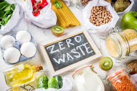

In this page, I will share my personal experience, goals, challenges, and practical tips regarding sustainable food.
Problem 1: Food Import
Challenges That We Faced
We noticed that food prices have risen due to ongoing issues such as war and inflation.
Since over 90% of Singapore's food supply is imported, food has become more expensive to purchase.
Food is now more expensive this year compared to previous years.
For instance, the average price of 1 kg of tomatoes is about $3 to $6, whereas in 2016 it was only around $2.30.
Hence, we decided to find a solution to combat this problem.
Food prices have increased over time.
Our Solution
My family and I planted different vegetables such as tomatoes, ginger, garlic, spring onions, and basil.
Every day, one of us takes turns to water the plants.
When the time comes, we will harvest the vegetables and use them for cooking.
In the short run, we need to spend some money to plant and grow these crops.
However, in the long run, we will be able to reduce the cost of buying vegetables and lower our expenses.
Linking Back to the Main Problem
Based on my experience, I believe that other households should also grow simple vegetables at home.
This can help them reduce the cost of buying food and decrease the demand for imported food.
As a result, food import rates may decrease.
This will also strengthen Singapore's food security significantly.
Reducing food imports may lead to cost savings for Singapore.
The money saved could then be used for other sustainability projects in Singapore.
Problem 2: Food Wastage
Challenges That We Faced
We tend to overbuy food items, so we are unable to consume everything before it expires.
As a result, many food items go to waste.
We also tend to dispose of leftovers from our plates after meals.
These key factors contribute to food wastage.
Our Solution
We only buy what we need so that we can consume all the food items before they expire.
We make sure to finish all the food on our plates without leaving leftovers.
If we do have leftovers, we use suitable food scraps as fertiliser for our plants.
This helps to reduce most of the food wastage in our home.
Linking Back to the Main Problem

Zero food wastage is possible when households work together.
As a single household, it is very difficult to achieve zero food wastage in Singapore.
However, if every household works together by adopting these simple steps, it will be
possible for everyone in Singapore to significantly reduce food wastage. Eventually, we
will be able to achieve zero food wastage.